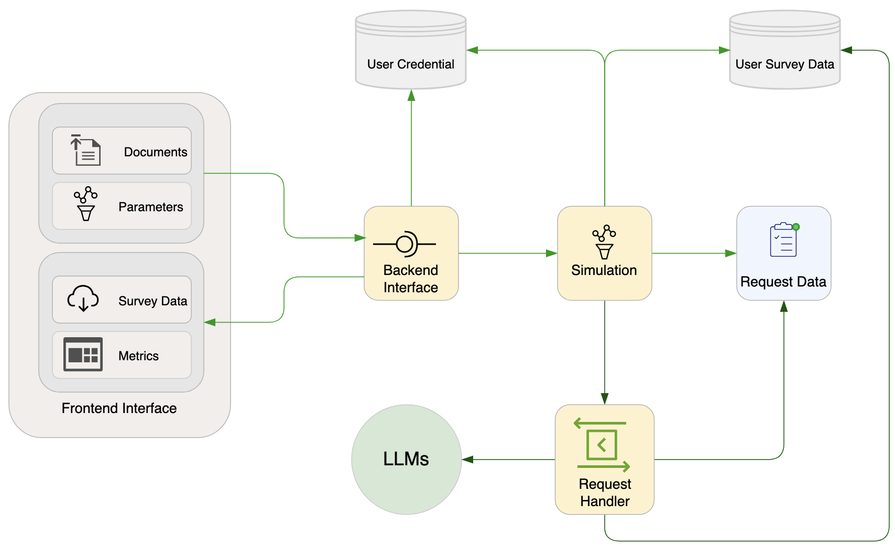

Motivation
We built SurveyLM with the following motivations in mind:
Artificial Intelligence (AI) alignment in complex social context is important, especially when AI systems make decisions or assist people in making decisions in complex social settings where there may be no true “right” answer or where an answer is heavily dependent on contextual factors and future uncertainties (specific information in real-world situations).
The application of survey and experimental methodologies, which are extensively utilized to study social behaviors, can greatly enhance the effectiveness of language model evaluation frameworks. These approaches can provide valuable insights into the behavior and alignment of the models, particularly when implemented in a systematic manner.
Augmented language models (ALMs) are AI systems that currently have the most advanced general reasoning capability and are increasingly functioning within diverse and intricate social scenarios, exhibiting emergent behaviors that were previously unexpected. Therefore, it is desirable to apply survey and experimental methodologies to not only unravel the factors influencing these emergent behaviors, but also to ensure these ALMs are adapting and aligning with human intentions and expectations, thus contributing to the responsible development and deployment of advanced AI systems.
Being able to learn from ALM’s feedback to improve survey/experiment designs is a great and underexplored application of ALMs, thus helping researchers to construct high quality survey frameworks at a fraction of the resources and time that would be otherwise required (past approach where humans have been doing everything).
SurveyLM aims to be the first platform to deliver robust results for the above value propositions.
Introduction
Our new platform, SurveyLM, aims to explore emerging value perspectives in ALMs (Mialon et al., 2023) through decision premises and contextuality in complex social settings. We chose to focus on complex social context because these environments present a wide array of situations and (social) dilemmas that help assessing the multifaceted and nuanced value judgments that ALMs have to make in the real world. As a result, we can better understand their decision-making mechanisms and the underlying value systems they rely on.
Since our focus is on complex social decision situations that have no obvious binary classification of being totally right or wrong, we adopt an approach that enables social science researchers to systematically evaluate ALMs’ decision dynamics in a diverse range of social contexts using different measures, instead of benchmarking ALMs capabilities against a simplified set of sequential decision making tasks often used in the field of AI (Shridhar et al., 2021). While these tasks provide a clear context to evaluate whether an ALM is right or wrong in making some decisions, or in carrying out some specific tasks, they are far from being adequate to capture real-world decision processes that social science researchers are concerned with.
Our approach to exploring ALM’s behaviors, and their value perspectives, is based on presenting the models with complex sets of survey questions and experimental settings, and then analyzing their responses in various social contexts. We opted for a survey-based approach as it has been proven to be an effective method for probing and value elicitation of ALMs (Arora et al., 2023; Binz & Schulz, 2023). Human value elicitation has always been an important research avenue (Haerpfer et al., 2021; Hofstede, 2005), as an individual’s identity and values often manifest in the choices and decisions they make. Given the increasing role of ALMs as agents interacting with humans who act as principals (i.e., principal-agent relationship in nature), it becomes crucial to comprehend the underlying values of these models and their implications for recommendations and decision-making processes, which may or may not align with those of human principals. By allowing the models to respond to a series of contextualized questions, we can gain valuable insights into how they navigate ethical scenarios and prioritize differing values for different principal profiles and characteristics (e.g., age, gender, ethnicity, country of residence, etc.).
The first key aspect we address is the question of why understanding ALM’s value perspectives matters in alignment research. By examining the context-dependent values that drive ALMs’ behaviours, we gain valuable insights into the ethical and moral frameworks and traces that shape their decision-making processes (as well as our own). These insights can help us align ALMs with (context-specific) human values and promote responsible AI development (Tamkin et al., 2021).
Defining measures of values is another crucial aspect of our platform, SurveyLM. We recognize that values are multifaceted and subjective, making their quantification challenging. Human values, as well as AI alignment to these values, evolve over time and iterations, necessitating a continuously adaptive approach. Through rigorous research and analysis, we aim to develop and translate robust methodologies to define and measure values in the context of ALMs, and to discern trends and shifts in ALMs value systems and alignment. This will provide a solid foundation for studying and understanding their behavior patterns in complex social settings.
To effectively explore emerging value perspectives in ALMs’ behaviors, we employ state-of-the-art ALM simulation techniques. By simulating ALMs in realistic scenarios, we can observe their decision-making processes and identify any evolving biases or value systems. This knowledge is crucial for staying ahead of potential risks and ensuring the responsible development of AI technologies.
The potential applications of our platform extend beyond the fields of behavioural economics, cognitive psychology, management or market research. We envision leveraging the insights gained to help drive social AI alignment and design in research, industry and community alike. By aligning AI systems with human values, we can (co-)create social AI systems that complement and enhance lives, benefiting society as a whole.
Overall, our framework proposed provides an effective and user-friendly platform for researchers to interact with GPT models. It upholds crucial principles such as user-first orientation, systematic and consistent operations, privacy respect, and safety in worst-case scenarios. Furthermore, it features robust components including a simple front-end interface, a real-time metrics monitor, secure databases, efficient agents, and a smart requests manager, all engineered to make complex survey research a breeze. We hope that this platform holds the potential to revolutionize how researchers engage with GPT models, offering a unique blend of flexibility, efficiency, and reliability.
In conclusion, our platform SurveyLM offers a unique opportunity to explore and understand the emerging value perspectives from ALMs’ behaviors. By addressing the questions of why values matter, defining measures of values, and simulating ALMs in complex social settings, we can generate insights that will help shape the future of AI development. With a focus on social AI alignment and design, we aim to create long-lived, complex social AI agents and systems that align with human values, promoting a responsible and beneficial integration of AI into industry and society.
Platform Design
The design of our platform is guided by several key principles centered around efficiency, flexibility, and user privacy.
Put Researchers First: This principle is the cornerstone of our design framework. The goal is to make the researcher’s interaction with the platform as intuitive and seamless as possible, reducing the complexity of the underlying operations. From parameter configuration to document and data processing, we aim to create an environment that empowers the user to focus solely on their research questions and outcomes. To achieve this, complex prompt engineering and API request handling will be handled internally by the platform, abstracting the process and reducing the technical knowledge necessary to operate the tool effectively.
Respect Research Logic: We design the platform in such a way that, despite layers of operational complexity, keeps the research logic intact by translating parameter configurations into prompt structures that ensure LLMs’ responses would be shaped by only those configurations. This is achieved by giving researchers freedom in defining transparently what comes into and what comes out of a simulation process. Whereas, the platform focuses on building optimal prompt structure and request handling by using researchers’ inputs with minimal additional content needed to interface consistently with LLMs.
Be Systematic Yet Flexible: A systematic approach to parameter configuration is crucial to accommodate a diverse range of research scenarios. With the flexibility to modify parameters as per the needs of the study, the platform allows researchers to experiment and customize the models’ responses, thereby facilitating a broader spectrum of research.
Embrace Consistency and Dynamism: Consistency is paramount for any research work. As such, the platform will ensure that the GPT models produce consistent responses to survey questions in terms of answer formats and compliance with other instructions. At the same time, we recognize the evolving nature of AI, incorporating the dynamic aspect of learning and growth in AI models to our consistency ethos. Balancing these elements enhances not just the reproducibility, but also the adaptive validity and reliability of our research findings.
Respect Privacy and Data Control: With the rise of data breaches, privacy protection is a critical concern for users. On our platform, we uphold the principle of data control, retaining user data exclusively until such time as the user decides to delete it. Upon deletion, all data will be purged except for the basic user credentials. This ensures that users’ privacy and data security are upheld without compromising the platform’s functionality.
Safe Worse Case: The platform will provide robustness against system errors, particularly those caused by API rate limits. Should an error occur, the platform will ensure that all simulation data leading up to the error are preserved. Additionally, any uncompleted operations will also be recorded and sent to the user for further decision making. This principle allows for seamless recovery, ensuring users’ work is never lost and fostering trust in the platform’s reliability.
Based on these principles, SurveyLM was built with several components as shown in Figure 1.

The platform’s architecture consists of several key components designed to enhance user interaction and facilitate research.
Frontend Interface: The interface serves as the gateway for users to interact with the platform. It allows for easy parameter configurations, document uploads, and provides real-time monitoring metrics and a data viewer. The interface is designed to be user-friendly and intuitive, minimizing the learning curve for new users.
Databases: Two types of databases are incorporated: one for storing user credentials and another for per-user simulation data. This separation is designed to enhance data security and privacy, as well as to provide a smooth user experience by keeping all relevant data at hand.
Backend interface: This is where a request is started and ended. The backend interface is responsible for authenticating users, processing simulation input data and sending survey data to the frontend listener. It executes these tasks through appropriate interface calls to the user credential database and the simulation component.
Simulation: This is where a survey process starts and ends. The simulation component is responsible for processing uploaded documents, constructing, creating request data, initialize the concurrent request handler, and update metrics data for the frontend metrics listener. Each agent possesses a profile constructed from parameter configurations and a set of interfaces for interaction with the metrics monitor, databases, and GPT models. The simulation component serves as a conduit, ensuring efficient and error-free data flow within the platform. It also internalizes the complexity of prompt engineering and related operations needed to ensure that the LLMs behave consistently in term of the structure of their response.
Request data: This component stores agent data and request data in an optimal format created by the simulation component. It also serves as a streaming data source to avoid unnecessary, and costly, memory consumption that would take place while concurrent api calls are made for each agent’s request.
Request Handler: This component manages the complexity of prompt engineering and concurrent API calls. It allows the simulation process to communicate with the GPT models seamlessly and ensures all prompts are correctly structured and successfully sent. It also manages API calls to reduce the chance of hitting rate limits frequently while ensuring that a simulation on large scale (e.g. one with 1000 agents) can run as fast as it could. Another important feature of this component is the handling of retry failures due to rate limit and API request errors. In the face of these failures, the handler will automatically process the last safe survey results and return them in proper formats for the agents to process further.
Applications
With the emergent capabilities of Large Language Models (LLMs) and the ongoing development of Augmented Language Models (ALMs), understanding the underlying premises that govern their behaviors and decision-making processes becomes increasingly crucial, especially when they operate in complex social settings and have real-world impact. This understanding is essential to ensure the alignment of social AI with human values.
ALMs, which are essentially built on top of pre-trained LLMs like OpenAI’s gpt-4, incorporate various elements such as retrieval plug-ins, different learning techniques (few-shot), diverse prompting methods (such as chain-of-thought, self-model, and contextual prompts), functional coding, and integration with other modalities like voice, vision, and sound (Mialon et al., 2023). Additionally, future iterations of ALMs are expected to incorporate different AI techniques such as reinforcement learning and symbolic logic, enhancing their knowledge organisation, reasoning, and learning capabilities.
Researchers have recognized the potential of LLMs as valuable tools to study and probe the human mind and society (Arora et al., 2023; Binz & Schulz, 2023; Korinek, 2023; Miotto et al., 2022), given their training on vast amounts of human data and their ability to generate human-like text. Scholars have also discussed their potential in simulating human subjects (Aher et al., 2023; Horton, 2023; Park et al., 2022). Consequently, researchers from various disciplines such as behavioral economics, cognitive psychology, social psychology, linguistics have now started to investigate LLMs’ behavior and decision-making processes and its use as a scientific tool. However, the procedures and tuning of LLMs (e.g., temperature, context window, prompt context and structure) for judgment and evaluation of alignment are not yet standardized or consistently applied across studies. Moreover, digital literacy and programming skills continue to present significant obstacles for many researchers to implement such research robustly at scale, particularly those in behavioral economics and the social sciences.
Considering the fast-paced nature of research and development in AI at the moment, it is essential to also extend our focus beyond pre-trained LLMs and consider the emergent capabilities and value systems of ALMs within various different social contexts. ALMs are increasingly augmented with additional tools and various prompting techniques, spanning different context windows and incorporating other modalities. Furthermore, these ALMs are now actively performing real-world actions. Calling a tool in the context of ALMs often involves having an impact on the virtual or physical world and observing the resulting effects, which are typically integrated into the ALM’s ongoing context. Moreover, ALMs are increasingly engaging in delegate actions such as carrying out transactions on our behalf or responding to customer queries and emails in human-like ways.
By acknowledging the advancements in ALMs and the complex nature of their interactions with the world, we can gain a comprehensive understanding of the premises underlying their behaviors and decision-making processes by benchmarking through survey and experimental methods. This knowledge is crucial for ensuring the development of responsible and aligned social AI systems that reflect human values for the benefit of all humankind.
SurveyLM facilitates this exploration in an easy and intuitive manner. It empowers researchers to investigate the behaviors and decision-making of LLMs and ALMs in a robust and systematic way, using an easy-to-use, click-and-play online interface.
The SurveyLM platform is highly versatile and adaptable to a multitude of decision-making scenarios and experimental settings. Here are just some potential applications:
Survey Data Generation: Simulate agents to answer an array of survey questions, creating a rich dataset that can mimic diverse, human-like responses to these questions. This can be particularly useful in preliminary research phases, hypothesis testing, or for enhancing existing datasets.
Allocation Games: Simulate scenarios where agents need to make decisions about resource allocation. This could involve public goods games, bargaining games, prisoner’s dilemma scenarios, or other economic games that explore cooperation, competition, and negotiation.
Cognitive Psychology Experiments and (Multi-Stage) Scenarios: Simulate cognitive tasks and adaptation processes to understand decision-making processes, memory, attention, perception, and problem-solving strategies.
Social Interaction Simulations: Model and simulate complex social interactions within groups, examining phenomena like group dynamics, communication patterns, social influence, and conformity.
Consumer Behaviour Analysis: Simulate buying decisions of agents to understand patterns in consumer behaviour, product preferences, and purchase rationales.
Policy Impact Analysis: Simulate reactions to new policies or regulations to gauge potential public response and impact (i.e., to understand emergent macro behaviours).
Risk-taking (Multi-Stage) Scenarios: Study decision-making under uncertainty or risk, such as in gambling or investment scenarios.
Health-related Decision-making: Explore choices related to health behaviours, preventative measures, treatment options, etc.
Educational Settings: Understand learning behaviour, knowledge acquisition, and responses to different teaching methods.
Environmental Decision-making: Simulate agent decisions about resource usage, conservation behaviours, and responses to environmental policies.
By simulating decision-making across a large spectrum of randomized agent demographic attributes (e.g., age, gender, education level, personality, etc.), SurveyLM provides a unique platform to investigate even the most sensitive, challenging, or otherwise taboo subjects/topics that are typically difficult to broach with human research participants, such as sexuality, drug use or life-event shocks. By probing these areas in a simulated environment, we leverage the potential of ALMs to explore sensitive topics (e.g., health, social, economic, ethical, etc) in a safe and ethical environment.
SurveyLM’s potential is vast when it comes to exploring, e.g., sensitive, heated, challenging or taboo topics. Here are a few examples:
Mental Health: Explore attitudes and behaviours around mental health issues, which are often stigmatized or misunderstood.
Addiction: Understand the complex dynamics of substance use and addiction, and the social attitudes towards these subjects.
Sexuality: Explore attitudes towards various sexual orientations, gender identities, or sexual behaviours.
Religion and Faith: Assess how individuals interact with religious beliefs and practices, including perceptions of other religions.
Political Extremism: Investigate the drivers of extreme political views, intolerance, or radicalisation.
Race and Ethnicity: Examine attitudes towards different races and ethnicities, including instances of bias, discrimination, and prejudice.
Immigration: Assess perceptions and misconceptions about immigration and immigrants.
Body Image: Explore attitudes and pressures around body image and physical appearance.
(Economic) Inequality: Understand perspectives on wealth distribution, poverty, and economic disparity or inequalities in general.
Climate Change and Natural Disasters: Investigate attitudes and beliefs about climate change and natural disasters, environmental responsibility, and sustainability.
These topics are typically difficult to discuss openly, but SurveyLM provides a secure and confidential platform for exploring them in depth.
We are confident that as SurveyLM evolves and adapts over time, it will uncover numerous other promising areas of application. The examples provided here represent just a fraction of the platform’s potential, highlighting only the possibilities we, and others in the field, have identified to date. With the rapidly advancing landscape of social science research, there is no doubt that the scope of SurveyLM’s application will continue to expand, revealing even more groundbreaking possibilities in the future.
Future Developments
Despite its advanced design and capabilities, our research platform faces certain limitations that we are actively seeking to address. These hurdles present opportunities for enhancement and refinement, contributing to the platform’s ongoing evolution.
Simplistic Agent Profile Configuration: A significant limitation lies in the current mechanistic profile configuration for each agent (e.g., you are <AGE>, your personality is <BIG 5 PROFILE>, and reside in <LOCATION>). We do not draw on or attempt to simulate human subjects from demographic backgrounds of past survey respondents, as in e.g., (Argyle et al., 2023). Standard profile constructs often used in survey studies underpin this design, providing a simplified interaction model for users. However, these constructs’ rudimentary nature restricts the context within which the GPT models function, sometimes compromising the depth and richness of their responses. To capture the nuanced, multifaceted nature of human contexts, we need a more sophisticated approach. The solution we are developing and testing is a custom profile prompt feature, which will enable users to create intricate, context-sensitive profiles for their agents (e.g., profile construction by story telling). By broadening the contextual basis of agent profiles, we anticipate an enhancement in the model responses’ relevance and applicability.
OpenAI API Rate Limit Constraints: The rate limits imposed by OpenAI’s API can influence the stability of output and latency, creating potential bottlenecks for users requiring high-volume, real-time access to the models while being able to receive responses to their complex request in expected formats. A good solution depends on three things. First, users must be able to obtain API keys that have the desirable rate limits. Second, OpenAI, and other LLM providers, will increase or phase out rate limits. Third, the platform’s batching and request mechanisms must be robust. We are currently enhancing our concurrent request handler to optimize request scheduling and execution, thus maximizing throughput within rate limits for a given API keys. Additionally, we are in discussions with OpenAI to explore ways to improve throughput and latency.
Model Diversity: Our platform currently supports only OpenAI’s models, chosen for their leading-edge capabilities and robust API access. This model-specific dependency could limit the platform’s flexibility, as different models may offer unique strengths and capabilities that could be beneficial in diverse research scenarios. We are therefore actively testing other open source and commercial AI models to potentially integrate into our platform (Bai et al., 2022; Touvron et al., 2023), thus expanding its versatility and research applicability. It should be noted that we avoid models that essentially add new prompt-engineering layers on top of base ALMs to improve decision performance in specific tasks (Shinn et al., 2023; Yao et al., 2023).
Realistic Condition Profiles: A minor drawback of our platform is the occasional generation of unrealistic agent profiles due to the randomness of profile construction. This approach also means that sometimes we end up with “interesting” agent profile combinations that may seldom present in the real world (e.g., a male lesbian). While rare, these cases can disrupt the research process and lead to unrealistic model responses. One solution lies in conditional profile construction, where agent attributes are selected based on real-world prevalence and correlations. However, it is important to note that this randomness can sometimes yield unique case studies that might not have been otherwise considered, offering unexpected insights and interesting research avenues.
Multi-Agent Games and Interaction: Currently, SurveyLM allows for the simulation of an agent’s participation in games with other players only when the other players and interaction rules are hard-coded into the uploaded questions and answer instruction. However, we are yet to develop the capacity for interactions between different agents within the same simulated population. To achieve this, a series of sophisticated enhancements would be necessary. Key among these improvements is the ability to form and manage groups of agents. These groups function as independent social entities, engaging in intricate social interactions within their own set boundaries. In this envisioned application, users could define group sizes, roles within these groups (e.g., the proposer and responder roles in the ultimatum game), and any variations thereof. Furthermore, we would offer the ability to set randomisation parameters for both roles and variations, adding yet another layer of complexity and realism to the simulations. Another captivating idea under this future avenue is the introduction of a chat function between different agents. This feature would allow the observation of direct communication patterns and language use within and across agent groups, offering researchers another dimension to their social agent studies.
In summary, while our platform faces certain limitations, we view these as opportunities for growth and enhancement. Our commitment to continuous development and user satisfaction drives us to persistently explore innovative solutions to these challenges. This means that we are open for feedback and suggestions. As we progress on this journey, we look forward to unlocking further potential in facilitating complex research through advanced ALM models.
For beta access and further details about the SurveyLM platform, please contact the corresponding author of this paper.